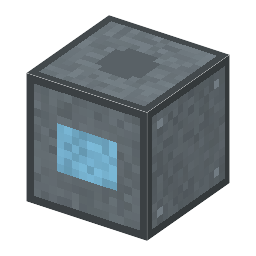
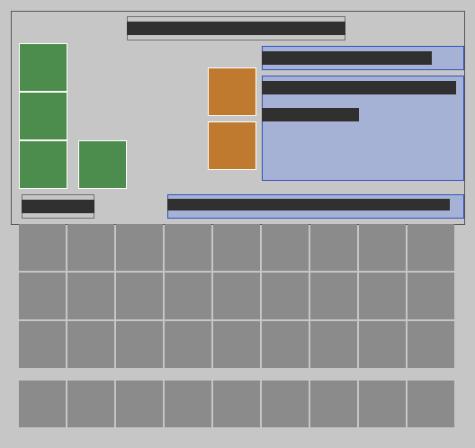

ウィキ
技術ネットワーク図
はじめての1時間
シリコーンの反応器
Silicone Reactor・機械
本当の歴史：
[5-06] 油拡散ポンプ
アイテムのページ（作り方）

3D で見る
工程（3）
メタノール（木精）
塩化水素ガス
アルミナ
→
シリコーンの反応器
塩化メチル・2,000 W・15 秒
→
塩化メチル
CH3OH + HCl → CH3Cl + H2O（水は捨てる）
金属シリコン
塩化メチル
×2
◇
copper ingot（バニラ）
空のガラス瓶
→
シリコーンの反応器
直接法・2,000 W・15 秒
→
ジメチルジクロロシラン
Si + 2CH3Cl → (CH3)2SiCl2（ロチョウ 1941〜45）
ジメチルジクロロシラン
蒸留水
→
シリコーンの反応器
加水分解・2,000 W・15 秒
→
シリコーン油
塩酸
(CH3)2SiCl2 + H2O → シリコーン油 + 2HCl

機械の画面（MOD のデータから描いた絵）